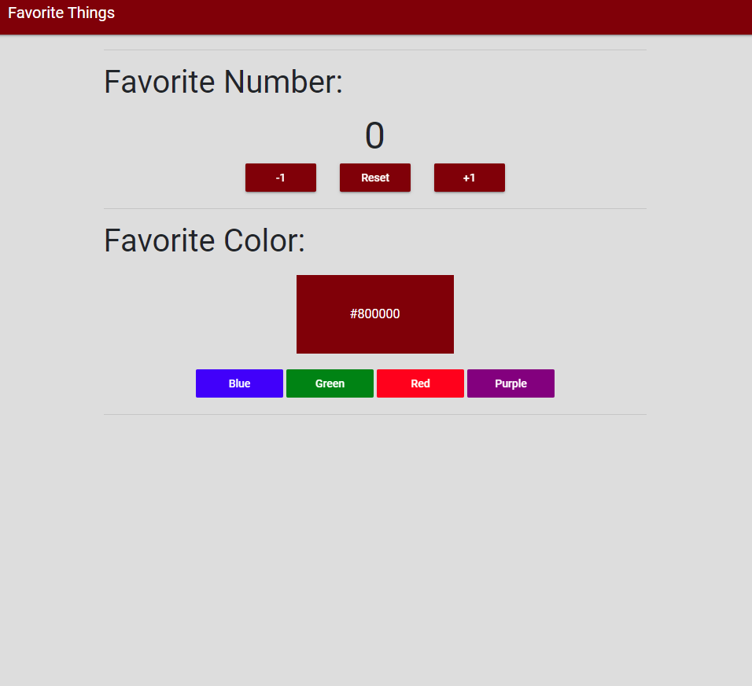
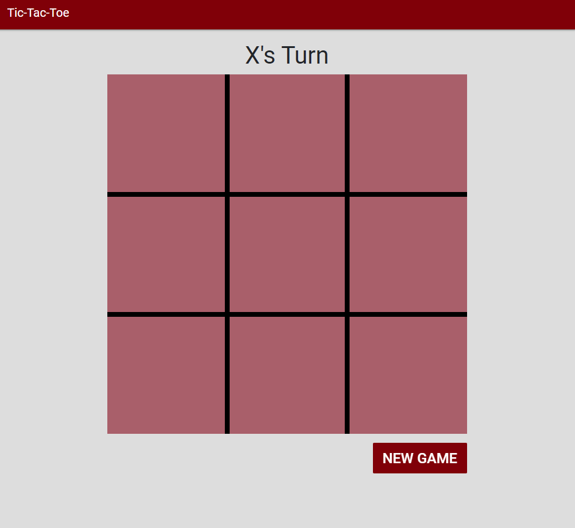
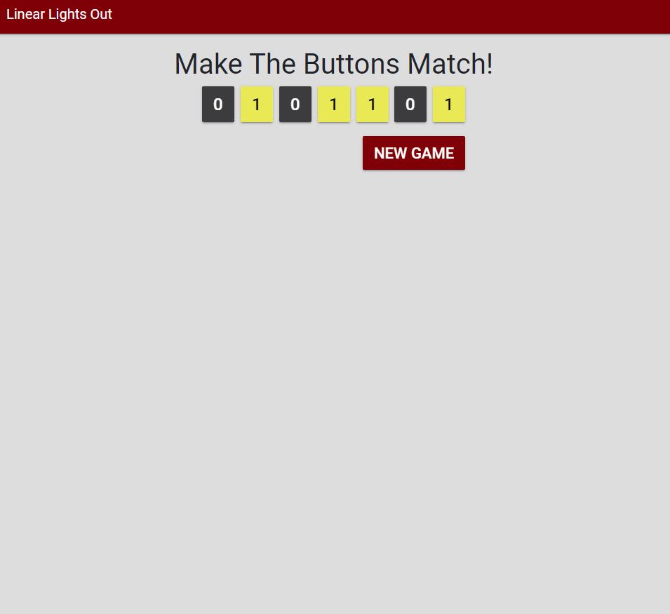

Richie's Portfolio
-
Favorite Things
The first homework assignment for CSSE280 tasked us with creating a simple webapp that allowed you to pick your favorite number by incrementing or decreasing a counter that was displayed on the screen. Extra functionality was added that allows for the number to be reset to 0 at anytime to ease the users experience. You can also choose your relative favorite color because, well, there are only 4 colors to choose from, but nonetheless still impressive due to the interactive aspect of the color being displayed once clicked.
-
Tic-Tac-Toe
For one of the "Follow Along" videos in CSSE280 we were instructed to build a Tic-Tac-Toe webapp. This was a rather interesting project because it exposed me to more of the javascript/css aspect of building a website. We learned how to manipulate and represent CSS code within a javascript file. An intresting aspect about this webapp is that you can reset the board at anytime by using the "New Game" button in the bottom right
-
Linear Lights Out
This is another game-based webapp, except this time it was a homework assignment where we tested what we learned from the "Tic-Tac-Toe" Follow Along. It was interesting being let out into the wild and being forced to fend for myself, although it was not as bad as I make it sound. I was able to use my knowledge on different frameworks in conjuction with my experience in html/css/javascript to conquer this assingment.
-
BIOLOGY RAP
The year was 2017. Me n my boy had to make a report to describe cells. but of course. we finnessed the system. made BANGER of a rap song. got an A. haven't gone viral yet...yet